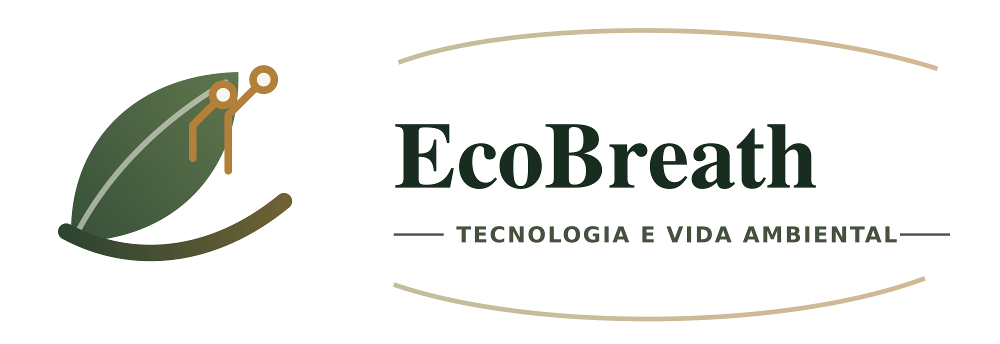

Análise dos bioindicadores da qualidade do ar por meio do desenvolvimento de um protótipo utilizando Arduino e robótica
Diário de bordo do projeto de Iniciação Científica do GEMAT, na Escola SESI de Vitória da Conquista (BA). Líquens mudam de cor quando expostos a poluentes; o protótipo lê essa cor e mostra o resultado em um site.

Mostra SESI STEAM · outubro de 2026
Sobre o EcoBreath
O EcoBreath nasceu da vontade de criar um protótipo que ajudasse as pessoas a conhecer a qualidade do ar do lugar onde estão. A ideia começou em 2025, com Gabriel e Vitória, dentro do GEMAT, grupo de Iniciação Científica da Escola SESI de Vitória da Conquista.
A pesquisa usa os líquens como bioindicadores: eles mudam de cor quando expostos a poluentes. Unindo Biologia, Química, robótica e Arduino, o grupo busca uma forma acessível de monitorar o ar e de mostrar os resultados ao público por meio de um site.
Ao longo do caminho vieram o plano de pesquisa, duas bancas, a fase de laboratório e as inscrições em feiras como FEMIC, FENIC e FEBRAT, além da apresentação na Mostra SESI STEAM.
Mês a mês
Escolha um mês na régua ou filtre por etapa. Cada registro traz um resumo do que foi escrito no caderno.
O caderno digitalizado
As 46 páginas do diário de bordo. Clique para ampliar e passar as páginas.

Quem faz o EcoBreath

GEMATGrupo de Pesquisa e Estudos em Matemática e suas Tecnologias